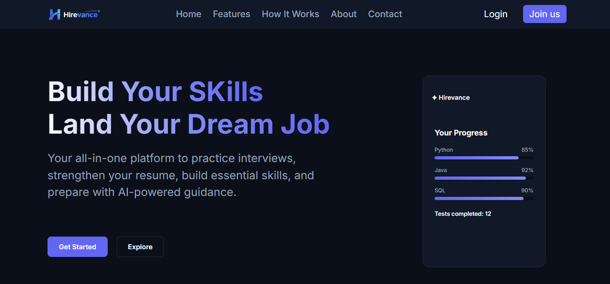

Developed a full-stack interview preparation platform that helps students and job seekers prepare for technical and HR interviews. Features include mock tests, question practice, personalized dashboards, progress tracking, resume management and analysis, and an AI-powered interview assistant. Integrated cloud storage for profile pictures and resumes, with deployment on Vercel.
Technologies Used: Python, Django, HTML, CSS, JavaScript, MySQL (TiDB Cloud), PyMySQL, Cloudinary, OpenRouter API, Vercel, Git, GitHub.